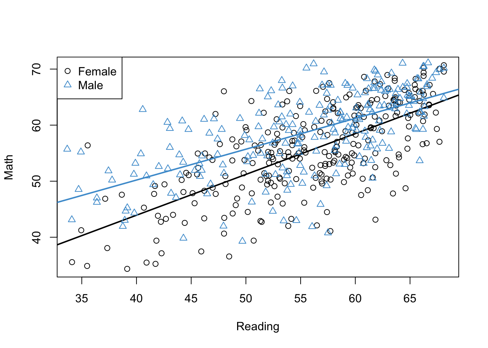

6.7 Workbook
This section collects the questions asked in this chapter. We will discuss these questions in class. If you haven’t written down / thought about the answers to these questions before class, the lesson will not be very useful for you! So, please engage with each question by writing down one or more answers, asking clarifying questions, posing follow up questions, etc.
Section 6.1
attach(NELS)
mod1 <- lm(achmat12[females] ~ achrdg12[females])
mod2 <- lm(achmat12[males] ~ achrdg12[males])
# Plot reading and math for females
plot(achrdg12[females], achmat12[females], xlab = "Reading", ylab = "Math")
abline(mod1, lwd = 2)
# Add points and line for males
points(achrdg12[males], achmat12[males], col = "#4B9CD3", pch = 2)
abline(mod2, col = "#4B9CD3", lwd = 2)
# Add a legend
legend(x = "topleft", legend = levels(gender), pch = c(1, 2), col = c(1, "#4B9CD3"))

Figure 6.8: Math Achievement, Reading Achievement, and Gender.
detach(NELS)Take a minute to think about what this plot is telling us about the relationships among Math Achievement, Reading Achievement, and Gender.
- Is the gender gap in math constant?
- Is the relationship between math and reading the same for males and females?
- Can you provide a summary of the plot in terms of what it says about the gender gap in Math Achievement?
Section 6.2
- No interaction model: The regression coefficients for the example data are shown below. Please use these numbers to provide an interpretation of the simple trends and the gender gap in Math Achievement for the NELS example. (Don’t worry about statistical significance, just focus on the meaning of the coefficients.)
mod3 <- lm(achmat12 ~ achrdg12 + gender, data = NELS)
coef(mod3)## (Intercept) achrdg12 genderMale
## 19.9812 0.6355 3.5017Section 6.3
- Interaction model: The regression coefficients for the example data are shown below. Please use these numbers to provide an interpretation of the interaction between Gender and Reading. (Don’t worry about statistical significance, just focus on the meaning of the coefficients.)
attach(NELS)
genderXachrdg12 <- (as.numeric(gender) - 1) * achrdg12
mod4 <- lm(achmat12 ~ achrdg12 + gender + genderXachrdg12)
coef(mod4)## (Intercept) achrdg12 genderMale genderXachrdg12
## 14.8031 0.7282 13.3933 -0.1779detach(NELS)- Interaction model with centered continuous predictor: Please write down your interpretation of the intercept and the regression coefficient for Gender in the regression output below.
attach(NELS)
# compute the deviation scores for reading
reading_dev <- achrdg12 - mean(achrdg12, na.rm = T)
# Run the interaction model as above
genderXreading_dev <- (as.numeric(gender) - 1) * reading_dev
mod5 <- lm(achmat12 ~ reading_dev + gender + genderXreading_dev)
coef(mod5)## (Intercept) reading_dev genderMale genderXreading_dev
## 55.2944 0.7282 3.4993 -0.1779detach(NELS)Section 6.4
- The output shows the gender gap in Math Achievement for 5 values of Reading Achievement. The values of Reading Achievement are the 5 quartiles. Please examine the statistical significance of the gender gap in Math Achievement at the 5 quartiles of Reading Achievement and make a conclusion whether the gap “dissapeared” for students with higher levels of Reading Achievement.
# Install the package if you haven't already done so
# install.packages("emmeans")
# Load the package into memory
library(emmeans)
# Fit the model using R's formula syntax for interaction '*'
mod6 <- lm(achmat12 ~ gender*achrdg12, data= NELS)
# Use the emmeans function to get the gender means on math, broken down by reading
gap <- emmeans(mod6, specs = "gender", by = "achrdg12", cov.reduce = quantile)
# Test whether the differences are significant
contrast(gap, method = "pairwise")## achrdg12 = 31.8:
## contrast estimate SE df t.ratio p.value
## Female - Male -7.74 1.637 496 -4.728 <.0001
##
## achrdg12 = 51.2:
## contrast estimate SE df t.ratio p.value
## Female - Male -4.27 0.593 496 -7.207 <.0001
##
## achrdg12 = 57.0:
## contrast estimate SE df t.ratio p.value
## Female - Male -3.25 0.529 496 -6.138 <.0001
##
## achrdg12 = 61.7:
## contrast estimate SE df t.ratio p.value
## Female - Male -2.41 0.658 496 -3.659 0.0003
##
## achrdg12 = 68.1:
## contrast estimate SE df t.ratio p.value
## Female - Male -1.28 0.967 496 -1.321 0.1872Section 6.5
- To check your understanding of centering with two continuous predictors, please provide an interpretation of all four regression coefficients in the centered model (below). Your interpretations should make reference to the situation where one or both predictors are equal to zero (see Equation (6.3)) and should also mentioned the interpretation of the value of zero for the centered variables.
attach(NELS)
mod8 <- lm(achmat12 ~ achrdg12_dev*ses_dev)
summary(mod8)##
## Call:
## lm(formula = achmat12 ~ achrdg12_dev * ses_dev)
##
## Residuals:
## Min 1Q Median 3Q Max
## -17.134 -3.894 0.728 4.130 15.015
##
## Coefficients:
## Estimate Std. Error t value Pr(>|t|)
## (Intercept) 56.82622 0.28691 198.07 <2e-16 ***
## achrdg12_dev 0.59031 0.03610 16.35 <2e-16 ***
## ses_dev 0.13730 0.04149 3.31 0.001 **
## achrdg12_dev:ses_dev 0.00427 0.00520 0.82 0.412
## ---
## Signif. codes: 0 '***' 0.001 '**' 0.01 '*' 0.05 '.' 0.1 ' ' 1
##
## Residual standard error: 6.03 on 496 degrees of freedom
## Multiple R-squared: 0.418, Adjusted R-squared: 0.415
## F-statistic: 119 on 3 and 496 DF, p-value: <2e-16detach(NELS)Section 6.6
- Please take a moment to write down how the Figure below would be different if there was no interaction between Pre-K and SES.
load("ECLS2577.Rdata")
ecls$prek <- factor(2 - ecls$p1center)
ecls$wksesq5 <- factor(ecls$wksesq5)
mod <- lm(c1rmscal ~ prek*wksesq5, data = ecls)
visreg::visreg(mod, xvar = "wksesq5", by = "prek",
partial = F, rug = F, overlay = T,
strip.names = T, xlab = "SES",
ylab = "Math Achievement in K")
- Please write down an interpretation of magnitude, direction, and statistical significance of each regression coefficient in this output (including the intercept), and be prepared to share your answers in class. Remember that
wksesq5is the variable code for the SES quintiles – the digit that follows the variable code indicates the level of variable.
summary(mod)##
## Call:
## lm(formula = c1rmscal ~ prek * wksesq5, data = ecls)
##
## Residuals:
## Min 1Q Median 3Q Max
## -16.768 -4.768 -0.975 3.955 31.232
##
## Coefficients:
## Estimate Std. Error t value Pr(>|t|)
## (Intercept) 16.045 0.735 21.82 < 2e-16 ***
## prek1 -0.373 0.960 -0.39 0.6973
## wksesq52 2.293 0.957 2.40 0.0166 *
## wksesq53 2.930 0.913 3.21 0.0013 **
## wksesq54 4.631 0.944 4.91 9.9e-07 ***
## wksesq55 7.299 1.034 7.06 2.2e-12 ***
## prek1:wksesq52 1.064 1.212 0.88 0.3801
## prek1:wksesq53 2.109 1.154 1.83 0.0679 .
## prek1:wksesq54 1.671 1.168 1.43 0.1527
## prek1:wksesq55 2.797 1.234 2.27 0.0235 *
## ---
## Signif. codes: 0 '***' 0.001 '**' 0.01 '*' 0.05 '.' 0.1 ' ' 1
##
## Residual standard error: 6.9 on 2567 degrees of freedom
## Multiple R-squared: 0.162, Adjusted R-squared: 0.159
## F-statistic: 55.2 on 9 and 2567 DF, p-value: <2e-16- Write down your interpretation of the ANOVA table below and be prepared to share you thoughts in class.
anova(mod)## Analysis of Variance Table
##
## Response: c1rmscal
## Df Sum Sq Mean Sq F value Pr(>F)
## prek 1 3434 3434 72.14 <2e-16 ***
## wksesq5 4 19914 4978 104.58 <2e-16 ***
## prek:wksesq5 4 299 75 1.57 0.18
## Residuals 2567 122198 48
## ---
## Signif. codes: 0 '***' 0.001 '**' 0.01 '*' 0.05 '.' 0.1 ' ' 1